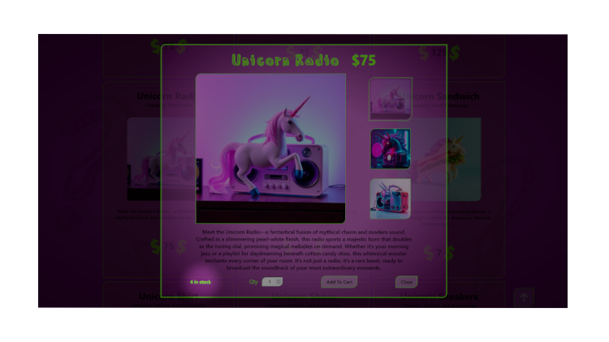

This page is going to start as a to-do list. Down the road, this page will have all the developer info such as info on code, database, rest api docs, sql.
Welcome to my first full-stack app! As you can probably tell, I am certainly not a designer, just someone who loves to write code and has a silly sense of humor. Below are the technical details of my... eh, em... masterpiece, from creating a frontend to creating a full rest API to setting up a databse.
In summary, this app has the ability for a user to create an account initiated either locally or through a Google Oauth signin.

Then the user can "shop"! The products have their inventory displayed with the product info, which is updated when an order is submitted, and subsequently updated again if an order is canceled.
The user will be notified with a toast notification if they exceed the inventory when they add the item to the cart. The users active shopping cart data persists after logout and is reloaded on login.

On the checkout page, the user may change an item's qty or remove an item from the cart, again with a toast notifaction if the inventory is exceeded.

The user also has the ability to edit their info during checkout.

When a user is logged in, they have access to their orders page, which offers a list of all the users orders and allows the user to click on one for more detail or to cancel the order if it is pending.
--*There is also the ability for an admin user to have access to an add product page.*--
The frontend portion of this site was made using HTML, CSS, and Vanilla Javascript. I have nothing against frontend frameworks, I have played with a little react.js, but I feel at this point in my coding journey it is very powerful to understand and practice the fundamentals.
The only js library I used in the frontend was toastify-js for toasting some errors, I know, I have a rye sense of humor... I am using SASS as a CSS pre-processor. The only comment on the HTML is that the product images and descriptions along with all the images of unicorns, were all generated using AI. I use GIMP 3.0 as my image editor which is what I created the main logo and a few of the buttons with.
At the time of this writing, I still have not written any media queries. I have tried to code everything to be as implicitly responsive as I can. The site is also keyboard navigable all the way from signing in or up to placing an order.
This is an express.js app which utilizes a few npm packages.
"dependencies": {
"bcrypt": "^6.0.0",
"cors": "^2.8.5",
"express": "^5.1.0",
"express-session": "^1.18.1",
"express-validator": "^7.2.1",
"fs": "^0.0.1-security",
"helmet": "^8.1.0",
"morgan": "^1.10.1",
"passport": "^0.7.0",
"passport-google-oauth20": "^2.0.0",
"passport-local": "^1.0.0",
"pg": "^8.16.0",
"toastify-js": "^1.12.0"
},
"devDependencies": {
"@eslint/js": "^9.32.0",
"connect-livereload": "^0.6.1",
"dotenv": "^16.5.0",
"eslint": "^9.32.0",
"express-dart-sass": "^1.0.4",
"globals": "^16.3.0",
"livereload": "^0.9.3",
"nodemon": "^3.1.10"
}
I was able to in conjunction with nodemon, use a package called livereload to be able to auto refresh the browser after a nodemon restart when a file changes.
This app uses bcrypt for hashing passwords. When I set up the database, I hadn't considered just how long the hashed passwords would be and I had to alter the table column's data type after the fact, no biggie.
Session management is handled with express-session and validation with express-validator. I used multiple validation schemas in seperate files to keep them organized.
Creating the swagger docs first made setting up the endpoints so much easier.
Let's talk database. I use Postgres, both locally and through Heroku which is who is hosting this site. Here is my entity relationship diagram:
The SQL was written and ran locally in pieces, but I kept adding it to a file, placing it in the correct order as I added it. It set up a test database successfully when I tested it. To set up the Heroku database, I just ran that file from the Heroku CLI. Here it is:
DROP TABLE IF EXISTS category CASCADE;
CREATE TABLE category(
category_id serial PRIMARY KEY,
category_name varchar(100) NOT NULL
);
DROP TABLE IF EXISTS users CASCADE;
CREATE TABLE users(
user_id serial PRIMARY KEY,
name varchar(100) NOT NULL,
hashed_pw varchar(255) NOT NULL,
email varchar(100) UNIQUE NOT NULL,
phone varchar(14),
is_admin boolean DEFAULT false
);
DROP TABLE IF EXISTS user_address CASCADE;
CREATE TABLE user_address(
user_id int,
address_line_1 varchar(50) NOT NULL,
address_line_2 varchar(50),
city varchar(50) NOT NULL,
state varchar(50) NOT NULL,
zip_code varchar(10) NOT NULL,
PRIMARY KEY (user_id),
FOREIGN KEY (user_id) REFERENCES users(user_id) ON DELETE CASCADE
);
DROP TABLE IF EXISTS products CASCADE;
CREATE TABLE products(
product_id serial PRIMARY KEY,
product_name varchar(100) NOT NULL,
product_description TEXT NOT NULL,
product_price NUMERIC NOT NULL,
image_url varchar(255),
category_id integer REFERENCES category(category_id) NOT NULL
);
DROP TABLE IF EXISTS inventory CASCADE;
CREATE TABLE inventory(
product_id integer,
current_qty integer NOT NULL,
min_qty integer NOT NULL,
max_qty integer NOT NULL,
PRIMARY KEY (product_id),
FOREIGN KEY (product_id) REFERENCES products(product_id) ON DELETE CASCADE
);
DROP TABLE IF EXISTS carts CASCADE;
CREATE TABLE carts(
cart_id serial PRIMARY KEY,
user_id integer REFERENCES users(user_id) NOT NULL,
is_active boolean DEFAULT true
);
DROP TABLE IF EXISTS cart_items CASCADE;
CREATE TABLE cart_items(
cart_id integer REFERENCES carts(cart_id) ON DELETE CASCADE,
product_id integer REFERENCES products(product_id),
PRIMARY KEY(cart_id, product_id),
item_qty integer NOT NULL
);
DROP TABLE IF EXISTS orders CASCADE;
CREATE TABLE orders(
order_id serial PRIMARY KEY,
user_id integer REFERENCES users(user_id) NOT NULL,
cart_id integer REFERENCES carts(cart_id) NOT NULL,
order_date TIMESTAMP WITH TIME ZONE DEFAULT CURRENT_TIMESTAMP NOT NULL,
order_total NUMERIC NOT NULL,
order_status varchar(50) DEFAULT 'pending' NOT NULL,
payment_method varchar(50) NOT NULL,
free_shipping_elligible boolean GENERATED ALWAYS AS (order_total > 99) STORED NOT NULL
);
DROP TABLE IF EXISTS site_counter;
CREATE TABLE site_counter(
id serial PRIMARY KEY,
new_session_timestamp TIMESTAMP WITH TIME ZONE DEFAULT CURRENT_TIMESTAMP NOT NULL
);
DROP TABLE IF EXISTS thoughts;
CREATE TABLE thoughts(
id SERIAL PRIMARY KEY,
name TEXT NOT NULL,
thought TEXT NOT NULL
);
insert into
category(category_name)
values
('Food & Beverage'),
('Fashion and Accessories'),
('Electronics'),
('Home Decor'),
('Gifts and Gadgets of Crazy');